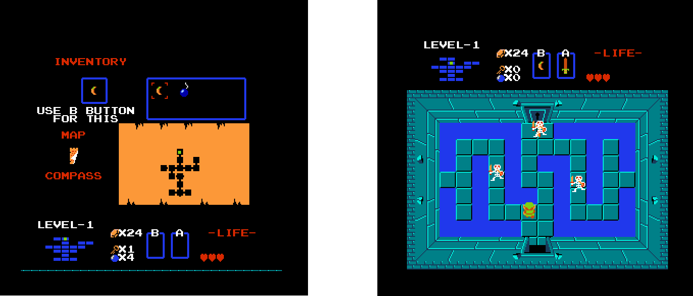

Sprint 4 - Completed first level
Due dates:
(See main webpage for calendar dates)
-
Initial planning: Tuesday midnight
-
Due date: on a Saturday at noon
-
Peer evaluation rubric (spreadsheet file on Carmen): due the Monday after
Objectives (short-form):
-
Implement everything else needed for the first level of your game.
Objectives (long-form):
- Update your level file to layout of the dungeon if you have not already done so.
- Keep the mouse controls to teleport between rooms for testing purposes.
- Have a scrolling transition between rooms and the item selection menu.
- Implement resetting the level upon the player character's death.
- Add the Heads Up Display (the font does not need to match the one used in the original game).
- Add sounds. Many machines seem to be buggy about playing sounds in Monogame. Reinstalling DirectX usually fixes this.
- Implement game state transitions:
- The item selection screen
- The game over screen
- Pausing
- The winning game state on grabbing the triforce piece
- Transitioning between rooms
-
Implement any other features you deem necessary for the first dungeon.
[Instructor's note: the gameplay within the first dungeon of The Legend of Zelda appears to have fewer little interesting details and quirks compared to
the gameplay in the first level in Super Mario Bros, so consider implementing a couple of additional items this sprint if you want to really impress us]
- By this portion of the project you should have remove all magic numbers and strings by making utility classes (and optionally inputing their values from a file).
- Begin research on feature ideas for Sprint 5.

Sprint 4 Work Expectations (the same as in previous sprints, repeated for convenience):
-
Planning:
- Enter start and end dates for the sprint.
-
Create product backlog items and tasks for the required features of the sprint.
- Associate all of these work items and tasks with the curernt sprint.
- Be sure to include a test plan in your planning
-
Software developmentand task tracking:
-
Implement the features described in the sprint description.
- Each team member should implement the tasks assigned to them.
- When you start work on a task, drag the task to In-Progress on the board.
- If you did not finish the task that day, reduce the remaining work time estimate for the task.
- If you finished the task, drag it to Done and make sure its remaining work time is zero.
-
You should place a high priority on the readability and simplicity of your code during the first half of the sprint.
-
When refactoring, place a higher priority on the maintainability of the code.
-
Try to finish early, given a three week period for a sprint, here are some recommended deadlines:
-
First day of sprint - finish putting tasks up on the board
-
End of second week - finish all of the functionality for the sprint ; complete one set of code reviews
-
Middle of third week - finish all code refactoring for the sprint ; complete second set of code reviews
-
End of the third week - complete remaining documentation and adminstrative tasks (described below)
-
Other processes and tasks:
-
README document
-
Write up a document with useful information on your project. This might include:
program controls,
descriptions of known bugs that program has,
and details of any tools or processes your team used that aren't explicitly required (for example, calculating and using Code Metrics as part of your design process)
-
Use tools to improve your code and/or create documentation about your codebase - do at least one of the following:
-
Calculate your code metrics within Visual Studio under the Analyze menu.
Generate and record this values at least once a week, consider putting them in a spreadsheet and making graphs using the data.
-
Use the .NET code analyzers (Roslyn) with rules for code quality analysis.
Document any errors or warnings that you get, then on-by-one fix them or set them as supressed with an explanation in your documentation on why you supressed that particular warning/error.
-
Code Reviews
-
Each member of the team should review at least one class and have at least one of their classes reviewed, with a focus on code readability
-
Each member of the team should review at least one class and have at least one of their classes reviewed, with a focus on code maintainability
-
More detailed guidelines on a code review process can be found below
-
Sprint reflection
-
Near the end of the sprint, write up a brief report on how your team performed this sprint, using the burndown chart from the board as the basis for discussion.
-
Feel free to also discuss your processes as a whole.
Were any changes your made this sprint constructive or detrimental?
Do you have any plans for doing things differently next sprint?
On code reviews:
The best way to fulill the requirement of documenting reviewing of code within your team is by doing pull requests.
Alternatively, you can write up code reviews in plaintext documents to be submitted with the project.
In the root folder of the project, add a folder to store code reviews.
You can add plaintext files to the project in this folder by going to the Project menu, add new item, and select text file under the general option.
In the plaintext file for a readability review, include the following information:
-
Author of the code review
-
Date of the code review
-
Sprint number
-
Name of the .cs file being reviewed
-
Author of the .cs file being reviewed
-
Number of minutes taken to complete the review
-
Specific comments on what is readable and what is not
In the plaintext file for a code quality review, include the following information:
-
Author of the code review
-
Date of the code review
-
Sprint number
-
Name of the .cs file being reviewed
-
Author of the .cs file being reviewed
-
Specific comments on code quality
-
A hypothetical change to make to the game related to file being reviewed and how the current implementation could or could not easily support that change
Project Submission
One member of your team should follow the build->clean and project folder zipping process from Sprint0 and turn in your project on Carmen on the appropriate assignment page.
If they aren't included in the zip file, also add your README and sprint reflection documents (and any other project management documents you made).
After the sprint is over, everyone should fill out a peer review form rating the work of everyone on your team, yourself included, for that sprint and turn in the file on Carmen on the assignment page for the peer review.
Additionally, at least one member of your team will need to arrange a meeting with your grader to review your work (at minimum the contents of your board, but you may review more).
The peer reviews are one of the main ways we get information about how your team is doing, so take your time to fill them out thoroughly and honestly.
In cases where peer reviews provide conflicting information,
either in inconsistent scores for a team member or inconsistency in scores and the overall functionality of the project,
your team might be asked to meet with the instructor to review your code commit logs to obtain more detailed information on each team member's contribution.
Grading
Each sprint you'll receive feedback on how your team is progressing. Your grader will review your work and provide comments on
-
your documentation (task tracking, code reviews, code metrics/analysis)
-
code functionality (has your team implemented enough work for its size and how buggy is it)
-
(workload permitting also comments on code quality)
See Sprint Grading Rubric
Your instructor will review your work (frequency TBD, likely to be every other sprint rather than all of them but the intial plan to is try to do so for all of the sprints) and provide comments on
Code quality will also play a role in determining numeric project scores at the end of the semester.
Note that 40% of the project scores are based on meeting high quality code standards.
You should refactor your code to eliminate any major code quality problems cited by your instructor and grader.
Minor issues may be excused but only after discussing the details with your instructor.